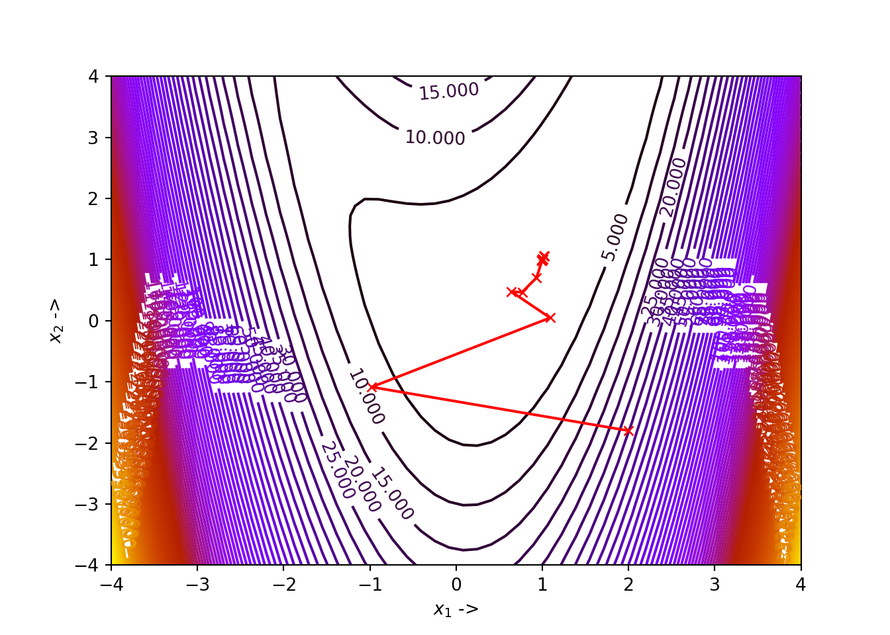
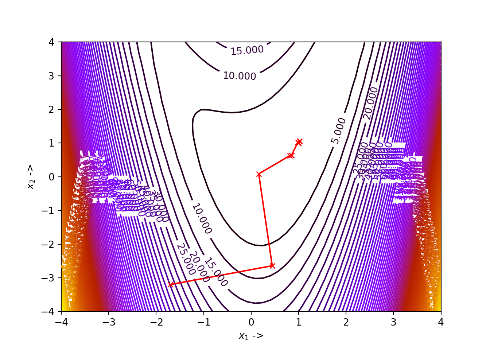

Chapter 5 Conjugate Gradient Methods
This chapter is dedicated to studying the Conjugate Gradient Methods in detail. The Linear and Non-linear versions of the CG methods have been discussed with five sub classes falling under the nonlinear CG method class. The five nonlinear CG methods that have been discussed are: Flethcher-Reeves method, Polak-Ribiere method, Hestenes-Stiefel method, Dai-Yuan method and Hager-Zhang method. Mathematical proofs have been provided wherever necessary. Python implementations of the algorithms have been included along with optimization examples. The chapter ends with introducing a specific Python function called the scipy.optimize.minimize() function that can be used to work with the Polak-Ribiere CG method.
5.1 Introduction to Conjugate Gradient Methods
The conjugate gradient methods are frequently used for solving large linear systems of equations and also for solving nonlinear optimization problems. This let us characterize the conjugate gradient methods into two classes:
- Linear Conjugate Gradient Method: This is an iterative method to solve large linear systems where the coefficient matrices are positive definite. This can be treated as a replacement of the Gaussian elimination method in numerical analysis.
- nonlinear Conjugate Gradient method: This is used for solving nonlinear optimization problems. We will study five methods under this class:
- Fletcher-Reeves algorithm,
- Polak-Ribiere algorithm,
- Hestenes-Stiefel algorithm,
- Dai-Yuan algorithm, and
- Hager-Zhang algorithm.
5.2 Linear Conjugate Gradient Algorithm
Suppose we want to find the minimizer of an objective function, having the quadratic form: \[\begin{equation} f(\mathbb{x}) = \frac{1}{2}\mathbb{x}^T\mathbb{A}\mathbb{x} - \mathbb{b}^T\mathbb{x} \tag{5.1} \end{equation}\] where, \(\mathbb{A}\) is a \(n \times n\) symmetric positive definite matrix.The problem can be formulated as: \[\begin{equation} \underset{\mathbb{x}\in \mathbb{R}^n}{\min} f(\mathbb{x}) = \frac{1}{2}\mathbb{x}^T\mathbb{A}\mathbb{x} - \mathbb{b}^T\mathbb{x} \tag{5.2} \end{equation}\]
Eq. (5.2) can be equivalently stated as the problem of solving the linear system of equations given by: \[\begin{equation} \mathbb{A}\mathbb{x} = \mathbb{b} \tag{5.3} \end{equation}\]
We use the linear conjugate gradient method to solve Eq. (5.3).
The residual of a linear system of equations, given by Eq. (5.3) is defined as: \[\begin{equation} r(\mathbb{x}) = \mathbb{A}\mathbb{x} - \mathbb{b} \tag{5.4} \end{equation}\]
5.2.1 Mutual Conjugacy
For a given symmetric positive definite matrix \(\mathbb{A}\), two vectors \(\mathbb{v}, \mathbb{w} \neq \mathbb{0} \in \mathbb{R}^n\) are defined to be mutually conjugate if the following condition is satisfied: \[\begin{equation} \mathbb{v}^T\mathbb{A}\mathbb{w} = 0 \tag{5.6} \end{equation}\]
Proof. Above theorem equivalently states that, for \(\mathbb{x} \in \mathbb{R}^n\), the following condition is satisfied: \[\begin{equation} \mathbb{x} = \sum_{j=1}^n\lambda_j\mathbb{v}_j \tag{5.7} \end{equation}\] where, \[\begin{equation} \lambda_j = \frac{\mathbb{v}_j^T\mathbb{A}\mathbb{x}}{\mathbb{v}_j^T\mathbb{A}\mathbb{v}_j} \tag{5.8} \end{equation}\] Let us consider the linear combination, \[\begin{equation} \sum_{j=1}^n c_j\mathbb{v}_j = \mathbb{0} \tag{5.9} \end{equation}\] Multiplying the above equation with the matrix \(\mathbb{A}\), we have, \[\begin{equation} \sum_{j=1}^n c_j \mathbb{A}\mathbb{v}_j=\mathbb{0} \tag{5.10} \end{equation}\] Since the vectors \(\mathbb{v}_j\) are mutually conjugate with respect to the matrix \(\mathbb{A}\), from Eq. (5.6), we can write that, \[\begin{equation} c_j\mathbb{v}_j^T\mathbb{A}\mathbb{v}_j = 0 \tag{5.11} \end{equation}\]
From the facts that \(\mathbb{A}\) is positive definite and that \(\mathbb{v}_j\) never equals \(\mathbb{0}\), from Eq. (5.11) we can state that, \(c_j=0\) for \(j=1, 2, \ldots, n\). This proves the fact that the set of vectors \(\mathbb{v}_j\) is linearly independent and may be used as a basis. Therefore, there exists a unique set \(\lambda_j, j=1, 2, \ldots, n\) for any \(\mathbb{x} \in \mathbb{R}^n\), such that Eq. (5.7) is satisfied. The positive definiteness of \(\mathbb{A}\) leads to the fact that, \[\begin{equation} \mathbb{v}_j^T\mathbb{A}\mathbb{x} = \lambda_j\mathbb{v}_j^T\mathbb{A}\mathbb{x} \tag{5.12} \end{equation}\] Finally, from Eq. (5.12) we can write that, \[\begin{equation} \lambda_j = \frac{\mathbb{v}_j^T\mathbb{A}\mathbb{x}}{\mathbb{v}_j^T\mathbb{A}\mathbb{v}_j} \tag{5.13} \end{equation}\] The proves the theorem.5.2.2 Conjugate Direction Algorithm
For our optimization task, where we aim to minimize the objective function \(f(\mathbb{x})\), where \(\mathbb{x} \in \mathbb{R}^n\), let \(\mathbb{x}_0\) be the starting iterate and the conjugate directions be set as \({\mathbb{\delta}_j}, j=1, 2, \ldots, n-1\). The successive iterates are generated by following:
\[\begin{equation} \mathbb{x}_j = \mathbb{x}_{j-1}+\beta_j\mathbb{\delta}_j \tag{5.14} \end{equation}\]
This \(\beta_j\) is the minimizer of the function \(f(\mathbb{x}_{j-1}+\beta\delta_j)\). We will now find the explicit form of \(\beta_j\). From Eq. (5.1) we can write that,
\[\begin{align} f(x_{j-1}+\beta \mathbb{\delta}_j) &= \frac{1}{2}[(\mathbb{x}_{j-1}+\beta\mathbb{\delta}_j)^T\mathbb{A}(\mathbb{x}_{j-1}+\beta\mathbb{\delta}_j)] - \mathbb{b}^T(\mathbb{x}_{j-1}+\beta\mathbb{\delta}_j) \nonumber \\ &= \frac{1}{2}[\mathbb{x}_{j-1}^T\mathbb{A}\mathbb{x}_{j-1}+2\beta\mathbb{x}_{j-1}^T\mathbb{A}\mathbb{\delta}_j + \beta^2\mathbb{\delta}_j^T\mathbb{A}\mathbb{\delta}_j] - \mathbb{b}^T(\mathbb{x}_{j-1}+\beta\mathbb{\delta}_j) \tag{5.15} \end{align}\]
Now, differentiating Eq. (5.15) with respect to \(\beta\) and setting it to \(0\), we get, \[\begin{align} & \frac{\partial f(\mathbb{x}_{j-1}+\beta\mathbb{\delta}_j)}{\partial \beta} = 0 \tag{5.16} \\ &\implies \mathbb{x}_{j-1}^T\mathbb{A}\mathbb{x}_{j-1} + \beta\mathbb{\delta}_j\mathbb{A}\mathbb{\delta}_j - \mathbb{b}^T\mathbb{\delta}_j = 0 \nonumber \\ &\implies (\mathbb{x}_{j-1}^T\mathbb{A} - \mathbb{b}^T)\mathbb{\delta}_j + \beta\mathbb{\delta}_j^T\mathbb{A}\mathbb{\delta}_j = 0 \tag{5.17} \end{align}\]
Now, from Eq. (5.4) we can write, \[\begin{equation} \mathbb{r}_j^T=(\mathbb{A}\mathbb{x}_{j-1}-\mathbb{b})^T = \mathbb{x}_{j-1}^T\mathbb{A} - \mathbb{b}^T \tag{5.18} \end{equation}\] where, we have used the fact that \(\mathbb{A}^T=\mathbb{A}\). So, from Eq. (5.17) we can write, \[\begin{equation} \mathbb{r}_j^T\mathbb{\delta}_j+\beta\mathbb{\delta}_j^T\mathbb{A}\mathbb{\delta}_j = 0 \tag{5.19} \end{equation}\]
This finally fetches us, \[\begin{equation} \beta_j = -\frac{\mathbb{r}_j^T\mathbb{\delta}_j}{\mathbb{\delta}_j^T\mathbb{A}\mathbb{\delta}_j} \tag{5.20} \end{equation}\] Eq. (5.20) is equivalent to the step-length formulation given by Eq. (5.26).
Proof. The conjugate directions \(\mathbb{\delta}\) are linearly independent, and thus for any scalar values \(\lambda_i\), we can write, \[\begin{align} \mathbb{x}^* &= \mathbb{x}_0 + \lambda_1\mathbb{\delta}_1 + \ldots + \lambda_{n-1}\mathbb{\delta}_{n-1} \nonumber \\ \mathbb{x}^* - \mathbb{x}_0 &= \lambda_1\mathbb{\delta}_1 + \ldots + \lambda_{n-1}\mathbb{\delta}_{n-1} \tag{5.21} \end{align}\]
Now, multiplying Eq. (5.21) non-commutatively by the preceding factor \(\mathbb{\delta}_j^T\mathbb{A}\), and using the mutual conjugacy from Eq. (5.6), we will have,
\[\begin{equation} \mathbb{\delta}_j^T\mathbb{A}(\mathbb{x}^*-\mathbb{x}_0) = \lambda_j\mathbb{\delta}_j^T\mathbb{A}\mathbb{\delta}_j^T \tag{5.22} \end{equation}\] which ultimately gives us, \[\begin{equation} \lambda_j = \frac{\mathbb{\delta}_j^T\mathbb{A}(\mathbb{x}^*-\mathbb{x}_0)}{\mathbb{\delta}_j^T\mathbb{A}\mathbb{\delta}_j^T} \tag{5.23} \end{equation}\]
Now again, using Eq. (5.14) we can generate the \(j^{th}\) iterate, given by, \[\begin{equation} \mathbb{x}_j = x_0 + \beta_1\mathbb{\delta}_1 + \beta_2\mathbb{\delta}_2 + \ldots + \beta_{j-1}\mathbb{\delta}_{j-1} \tag{5.24} \end{equation}\]
Now subtracting Eq. (5.24) from the solution \(\mathbb{x}^*\), we get, \[\begin{equation} \mathbb{x}^* - \mathbb{x}_j = \mathbb{x}^* - \mathbb{x}_0 - \beta_1\mathbb{\delta}_1 - \ldots - \beta_{j-1}\mathbb{\delta}_{j-1} \tag{5.25} \end{equation}\] fetching us, \[\begin{equation} \mathbb{x}^* - \mathbb{x}_0 = \mathbb{x}^* - \mathbb{x}_j + \beta_1\mathbb{\delta}_1 - \ldots + \beta_{j-1}\mathbb{\delta}_{j-1} \tag{5.26} \end{equation}\] Now, again multiplying Eq. (5.26) non-commutatively by the preceding factor \(\mathbb{\delta}_j^T\mathbb{A}\), and using the mutual conjugacy from Eq. (5.6), we will have, \[\begin{equation} \mathbb{\delta}_j^T\mathbb{A}(\mathbb{x}^* - \mathbb{x}_0) = \mathbb{\delta}_j^T\mathbb{A}(\mathbb{x}^* - \mathbb{x}_j) \tag{5.27} \end{equation}\]
Using the fact that \(\mathbb{A}\mathbb{x}^*=\mathbb{b}\) and also Eq. (5.18), we can modify Eq. (5.27) in the following way: \[\begin{align} \mathbb{\delta}_j^T\mathbb{A}(\mathbb{x}^* - \mathbb{x}_0) &= \mathbb{\delta}_j^T(\mathbb{b} - \mathbb{x}_j) \nonumber \\ &= -\mathbb{\delta}_j^T\mathbb{r}_j \nonumber \\ &= -\mathbb{r}_j^T\mathbb{\delta}_j \tag{5.28} \end{align}\]
So, Eq. (5.23) becomes, \[\begin{equation} \lambda_j = -\frac{\mathbb{r}_j^T\mathbb{\delta}_j}{\mathbb{\delta}_j^T\mathbb{A}\mathbb{\delta}_j} \tag{5.29} \end{equation}\]
which is similar to Eq. (5.20). So it can be concluded that, \[\begin{equation} \lambda_j = \beta_j \tag{5.30} \end{equation}\] This completes the proof of the theorem.5.2.3 Preliminary Algorithm
In the linear conjugate gradient method, the direction \(\mathbb{\delta}_j\) ix a linear combination of the preceding direction \(\mathbb{\delta}_{j-1}\) and the negative of the residual \(-\mathbb{r}_j\). So we can write, \[\begin{equation} \mathbb{\delta}_j = \chi_j \mathbb{\delta}_{j-1} - \mathbb{r}_j \tag{5.33} \end{equation}\]
Now, to evaluate \(\chi_j\), we multiply Eq. (5.33) non-commutatively with the preceding factor \(\mathbb{\delta}_{j-1}^T\mathbb{A}\) and use the mutual conjugacy condition that \(\mathbb{\delta}_{j-1}^T\mathbb{A}\mathbb{\delta}_j=0\). \[\begin{equation} \mathbb{\delta}_{j-1}^T\mathbb{A}\mathbb{\delta}_j = \chi_j\mathbb{\delta}_{j-1}^T\mathbb{A}\mathbb{\delta}_{j-1} - \mathbb{\delta}_{j-1}^T\mathbb{A}\mathbb{r}_j = 0 \tag{5.34} \end{equation}\]
So, we see that, \[\begin{align} \chi_j &= \frac{\mathbb{\delta}_{j-1}^T\mathbb{A}\mathbb{r}_j}{\mathbb{\delta}_{j-1}^T\mathbb{A}\mathbb{\delta}_{j-1}} \nonumber \\ &= \frac{(\mathbb{A}\mathbb{r}_j)^T\mathbb{\delta}_{j-1}}{\mathbb{\delta}_{j-1}^T\mathbb{A}\mathbb{\delta}_{j-1}} \nonumber \\ &= \frac{\mathbb{r}_j^T\mathbb{A}^T\mathbb{\delta}_{j-1}}{\mathbb{\delta}_{j-1}^T\mathbb{A}\mathbb{\delta}_{j-1}} \nonumber \\ &= \frac{\mathbb{r}_j^T\mathbb{A}\mathbb{\delta}_{j-1}}{\mathbb{\delta}_{j-1}^T\mathbb{A}\mathbb{\delta}_{j-1}} \tag{5.35} \end{align}\]
The linear conjugate gradient algorithm is given below:

Example 5.1 Let us consider an objective function given by: \[\begin{equation} f(x_1, x_2) = \frac{x_1^2}{2} + x_1x_2 + x_2^2-2x_2 \tag{5.36} \end{equation}\]
Finding the minimizer of this objective function is equivalent to finding the solution to the equation given by \(\mathbb{A}\mathbb{x} = \mathbb{b}\), where \(\mathbb{A} = \begin{bmatrix} \frac{1}{2} & \frac{1}{2} \\ \frac{1}{2} & 1\end{bmatrix}\), \(\mathbb{x} = \begin{bmatrix}x_1 \\ x_2\end{bmatrix}\) and \(\mathbb{b} = \begin{bmatrix}0 \\2\end{bmatrix}\). So, we use the linear conjugate gradient algorithm to solve \[\begin{equation} \begin{bmatrix} \frac{1}{2} & \frac{1}{2} \\ \frac{1}{2} & 1\end{bmatrix} \begin{bmatrix}x_1 \\ x_2\end{bmatrix} = \begin{bmatrix}0 \\2\end{bmatrix} \tag{5.37} \end{equation}\]
where, we will consider the starting iterate to be \(\begin{bmatrix}-2.3 \\ 2.2 \end{bmatrix}\) tolerance \(\epsilon =10^{-5}\). As usual, let us first define the objective function in Python.Next we define the matrix \(\mathbb{A}\) and the vector \(\mathbb{b}\) in Python.
We can make it sure that \(\mathbb{A}\) is actually a symmetric positive definite matrix.
## The eigenvalues of A: [0.19098301 1.30901699]if (np.all(eigs>0)):
print("A is positive definite")
elif (np.all(eigs>=0)):
print("A is positive semi-definite")
else:
print("A is negative definite")## A is positive definiteWe see that \(\mathbb{A}\) is indeed positive definite. To check whether it is symmetric, we can check whether \(\mathbb{A}^T\) equals \(\mathbb{A}\).
## A is symmetricSo \(\mathbb{A}\) is symmetric too. Now we write the Python function linear_CG() that implements the linear conjugate gradient algorithm
def linear_CG(x, A, b, epsilon):
res = A.dot(x) - b # Initialize the residual
delta = -res # Initialize the descent direction
while True:
if np.linalg.norm(res) <= epsilon:
return x, f(x) # Return the minimizer x* and the function value f(x*)
D = A.dot(delta)
beta = -(res.dot(delta))/(delta.dot(D)) # Line (11) in the algorithm
x = x + beta*delta # Generate the new iterate
res = A.dot(x) - b # generate the new residual
chi = res.dot(D)/(delta.dot(D)) # Line (14) in the algorithm
delta = chi*delta - res # Generate the new descent directionFinally, we pass the parameters that we consider for this example to the function linear_CG().
## (array([-4., 4.]), 0.0)We see that the solution is \(\mathbb{x^*} \sim \begin{bmatrix}-4 \\ 4 \end{bmatrix}\) and the function value at this point is \(0\). We can verify the result is correct by following the trivial solution of Eq. (5.37):
\[\begin{align} \begin{bmatrix}x_1 \\ x_2\end{bmatrix} &= \begin{bmatrix} \frac{1}{2} & \frac{1}{2} \\ \frac{1}{2} & 1\end{bmatrix}^{-1} \begin{bmatrix}0 \\2\end{bmatrix} \nonumber \\ &= \begin{bmatrix}-4 \\ 4\end{bmatrix} \tag{5.38} \end{align}\]
We can even write a Python code to check the above case:
## array([-4., 4.])We see that our Python implementation of the linear conjugate gradient algorithm works perfectly. We will now discuss nonlinear conjugate gradient algorithms in the next section
5.3 Nonlinear Conjugate Gradient Algorithm
We can modify our conjugate gradient method to optimize convex nonlinear objective functions. The first method that we study under this class is the Fletcher-Reeves method.
5.3.1 Feltcher-Reeves Algorithm
The first application of the Conjugate Gradient Method on nonlinear objective functions was introduced by Fletcher and Reeves. The directions \(\mathbb{\delta}_j\) given by Fletcher and Reeves are mutually conjugate with respect to the symmetric positive definite matrix \(\mathbb{A}\) in Eq. (5.1), where the residual is given by Eq. (5.5). The descent direction is given by,
\[\begin{equation} \mathbb{\delta}_{j+1} = \begin{cases} -\nabla f(\mathbb{x}_j),\ \ j=0 \\ -\nabla f(\mathbb{x}_j) + \chi_j\mathbb{\delta}_j,\ \ j=1, 2, \ldots, n-1 \tag{5.39} \end{cases} \end{equation}\]
In the above equation, \[\begin{equation} \mathbb{x}_j = \mathbb{x}_{j-1}+\beta_j\mathbb{\delta}_j \tag{5.40} \end{equation}\]
where \(\beta_j\) is the \(j^{th}\) step length. \(\chi_j\) in Eq. (5.39) is given by, \[\begin{equation} \chi_j = \frac{\|\nabla f(\mathbb{x}_j)\|^2}{\|\nabla f(\mathbb{x}_{j-1})\|^2} \tag{5.41} \end{equation}\]
The Fletcher-Reeves Algorithm is given below:

def func(x): # Objective function
return x[0]**4 - 2*x[0]**2*x[1] + x[0]**2 + x[1]**2 - 2*x[0] + 1
Df = grad(func) # Gradient of the objective functionNext we define the function Fletcher_Reeves() in Python:
from scipy.optimize import line_search
NORM = np.linalg.norm
def Fletcher_Reeves(Xj, tol, alpha_1, alpha_2):
x1 = [Xj[0]]
x2 = [Xj[1]]
D = Df(Xj)
delta = -D # Initialize the descent direction
while True:
start_point = Xj # Start point for step length selection
beta = line_search(f=func, myfprime=Df, xk=start_point, pk=delta, c1=alpha_1, c2=alpha_2)[0] # Selecting the step length
if beta!=None:
X = Xj+ beta*delta #Newly updated experimental point
if NORM(Df(X)) < tol:
x1 += [X[0], ]
x2 += [X[1], ]
return X, func(X) # Return the results
else:
Xj = X
d = D # Gradient at the preceding experimental point
D = Df(Xj) # Gradient at the current experimental point
chi = NORM(D)**2/NORM(d)**2 # Line (16) of the Fletcher-Reeves algorithm
delta = -D + chi*delta # Newly updated descent direction
x1 += [Xj[0], ]
x2 += [Xj[1], ]According to our example we set our parameter values and pass them to the Fletcher_Reeves() function:
## (array([0.99999267, 0.99998207]), 6.445799449750211e-11)We notice that, for our choice of parameters, the algorithm has converged to the minimizer \(\mathbb{x}^* \sim \begin{bmatrix} 1 \\ 1 \end{bmatrix}\) with \(f(\mathbb{x}^*) \sim 0\). The figure showing the optimization trajectory is shown below:

The optimization data for the same is given below:
## +----+-----------+------------+--------------+--------------+
## | | x_1 | x_2 | f(X) | ||grad|| |
## |----+-----------+------------+--------------+--------------|
## | 0 | 2 | -1.8 | 34.64 | 49.7707 |
## | 1 | -0.98032 | -1.08571 | 8.1108 | 12.6662 |
## | 2 | 1.08966 | 0.0472277 | 1.30794 | 5.6311 |
## | 3 | 0.642619 | 0.473047 | 0.131332 | 0.877485 |
## | 4 | 0.766371 | 0.46651 | 0.0691785 | 0.260336 |
## | 5 | 0.932517 | 0.704482 | 0.0318138 | 0.583346 |
## | 6 | 1.0149 | 1.06008 | 0.00112543 | 0.110081 |
## | 7 | 1.02357 | 1.0596 | 0.000697231 | 0.0238509 |
## | 8 | 1.02489 | 1.05473 | 0.000638128 | 0.0331525 |
## | 9 | 1.00544 | 0.999549 | 0.000158528 | 0.0609372 |
## | 10 | 0.996075 | 0.987011 | 4.19723e-05 | 0.016347 |
## | 11 | 0.994792 | 0.986923 | 3.43476e-05 | 0.00538401 |
## | 12 | 0.994466 | 0.987575 | 3.25511e-05 | 0.00620548 |
## | 13 | 0.9956 | 0.992867 | 2.20695e-05 | 0.015708 |
## | 14 | 0.999909 | 1.00171 | 3.59093e-06 | 0.008628 |
## | 15 | 1.00088 | 1.00254 | 1.3779e-06 | 0.00206337 |
## | 16 | 1.00102 | 1.00249 | 1.24228e-06 | 0.000925229 |
## | 17 | 1.00106 | 1.00226 | 1.14704e-06 | 0.00161353 |
## | 18 | 1.00056 | 1.00065 | 5.3011e-07 | 0.00313135 |
## | 19 | 0.999916 | 0.99956 | 8.14653e-08 | 0.00107299 |
## | 20 | 0.999816 | 0.999511 | 4.85294e-08 | 0.000269684 |
## | 21 | 0.999798 | 0.999526 | 4.57054e-08 | 0.000185146 |
## | 22 | 0.999803 | 0.999615 | 3.90603e-08 | 0.000435884 |
## | 23 | 0.99995 | 0.999991 | 1.08357e-08 | 0.000499645 |
## | 24 | 1.00003 | 1.00009 | 2.25348e-09 | 0.000130632 |
## | 25 | 1.00004 | 1.00009 | 1.75917e-09 | 3.97529e-05 |
## | 26 | 1.00004 | 1.00009 | 1.66947e-09 | 4.22905e-05 |
## | 27 | 1.00003 | 1.00006 | 1.1931e-09 | 0.000108964 |
## | 28 | 1 | 0.999989 | 2.11734e-10 | 6.79786e-05 |
## | 29 | 0.999994 | 0.999982 | 7.24881e-11 | 1.61034e-05 |
## | 30 | 0.999993 | 0.999982 | 6.4458e-11 | 6.72611e-06 |
## +----+-----------+------------+--------------+--------------+The algorithm reduces to the linear conjugate gradient algorithm if the objective function is chosen to be strongly convex quadratic. We notice that in the algorithm, we just need to compute the objective function and its gradient at each iterate and no Hessian computation is required. Next we discuss the Polak-Ribiere algorithm.
5.3.2 Polak-Ribiere Algorithm
One of the variants of the Fletcher-Reeves algorithm is the Polak-Ribiere algorithm, where, the \(\chi_j\) in Eq. (5.39) is given by: \[\begin{equation} \chi_j = \frac{[\nabla f(\mathbb{x}_j) - \nabla f(\mathbb{x}_{j-1})]^T\nabla f(\mathbb{x}_j)}{\|\nabla f(\mathbb{x}_{j-1})\|^2} \tag{5.43} \end{equation}\]
One important characteristic to notice here is that, the strong Wolfe conditions do not guarantee the direction \(\mathbb{\delta}_j\) will always be a descent direction in the Polak-RIbiere algorithm. Then, \(\chi\) needs to modified in the following way: \[\begin{equation} \chi_j = \max\{0, \chi_j\} \tag{5.44} \end{equation}\]
This ensures that the strong wolfe conditions guarantee a descent direction . The Polak-Ribiere algorithm reduces back to the Fletcher-Reeves algorithm if the objective function is strongly convex quadratic, and the line search is exact. The Polak-Ribiere Algorithm is given below:

The polak-Ribiere algorithm is most often considered as more coherent than the Fletcher-Reeves algorithm.
Polak_Ribiere() in Python:
def Polak_Ribiere(Xj, tol, alpha_1, alpha_2):
x1 = [Xj[0]]
x2 = [Xj[1]]
D = Df(Xj)
delta = -D # Initialize the descent direction
while True:
start_point = Xj # Start point for step length selection
beta = line_search(f=func, myfprime=Df, xk=start_point, pk=delta, c1=alpha_1, c2=alpha_2)[0] # Selecting the step length
if beta!=None:
X = Xj+ beta*delta # Newly updated experimental point
if NORM(Df(X)) < tol:
x1 += [X[0], ]
x2 += [X[1], ]
return X, func(X) # Return the results
else:
Xj = X
d = D # Gradient of the preceding experimental point
D = Df(Xj) # Gradient of the current experimental point
chi = (D-d).dot(D)/NORM(d)**2
chi = max(0, chi) # Line (16) of the Polak-Ribiere Algorithm
delta = -D + chi*delta # Newly updated direction
x1 += [Xj[0], ]
x2 += [Xj[1], ]According to our example we set our parameter values and pass them to the Polak_Ribiere() function:
## (array([1., 1.]), 0.0)We notice that, for our choice of parameters, the algorithm has converged to the minimizer \(\mathbb{x}^* \sim \begin{bmatrix} 1 \\ 1 \end{bmatrix}\) with \(f(\mathbb{x}^*) \sim 0\). The Figure showing the optimization trajectory is shown below:

The optimization data for the same is given in the table below:
## +----+-----------+------------+--------------+--------------+
## | | x_1 | x_2 | f(X) | ||grad|| |
## |----+-----------+------------+--------------+--------------|
## | 0 | -1.7 | -3.2 | 44.3781 | 48.3706 |
## | 1 | 0.444052 | -2.64214 | 8.37083 | 6.90669 |
## | 2 | 0.160431 | 0.0845414 | 0.708334 | 1.7209 |
## | 3 | 0.813837 | 0.626715 | 0.0359251 | 0.266095 |
## | 4 | 0.851657 | 0.637222 | 0.0297668 | 0.176227 |
## | 5 | 0.985178 | 1.02861 | 0.00358778 | 0.283221 |
## | 6 | 1.01609 | 1.06259 | 0.00116756 | 0.1086 |
## | 7 | 1.0238 | 1.05744 | 0.000652461 | 0.0208901 |
## | 8 | 0.99978 | 1.00021 | 4.68434e-07 | 0.00329728 |
## | 9 | 1.00002 | 1.00004 | 2.62911e-10 | 1.34768e-05 |
## | 10 | 1 | 1 | 2.00728e-13 | 2.16127e-06 |
## | 11 | 1 | 1 | 0 | 1.79832e-10 |
## +----+-----------+------------+--------------+--------------+Next we study the Hestenes-Stiefel algorithm.
5.3.3 Hestenes-Stiefel Algorithm
In this variant, Eq. (5.39) changes to: \[\begin{equation} \chi_j = \frac{\nabla f(\mathbb{x}_j)^T[\nabla(\mathbb{x}_j) - \nabla f(\mathbb{x}_{j-1})]}{\mathbb{\delta}_j^T[\nabla(\mathbb{x}_j) - \nabla f(\mathbb{x}_{j-1})]} \tag{5.45} \end{equation}\]
The Hestenes-Stiefel algorithm is given below:

The Python implementation is given by the Python function Hestenes_Stiefel().
def Hestenes_Stiefel(Xj, tol, alpha_1, alpha_2):
x1 = [Xj[0]]
x2 = [Xj[1]]
D = Df(Xj)
delta = -D
while True:
start_point = Xj # Start point for step length selection
beta = line_search(f=func, myfprime=Df, xk=start_point, pk=delta, c1=alpha_1, c2=alpha_2)[0] # Selecting the step length
if beta!=None:
X = Xj+ beta*delta
if NORM(Df(X)) < tol:
x1 += [X[0], ]
x2 += [X[1], ]
return X, func(X)
else:
Xj = X
d = D
D = Df(Xj)
chi = D.dot(D - d)/delta.dot(D - d) # See line (16)
delta = -D + chi*delta
x1 += [Xj[0], ]
x2 += [Xj[1], ]The Python function can be used by the user to optimize and study any objective function provided reasonable parameters are passed to it. The variant that we look into next, is called the Dai-Yuan algorithm.
5.3.4 Dai-Yuan Algorithm
In this variant, Eq. (5.39) changes to: \[\begin{equation} \chi_j = \frac{\|\nabla f(\mathbb{x}_j)\|^2}{\mathbb{\delta}_j^T[\nabla f(\mathbb{x}_j) - \nabla f(\mathbb{x}_{j-1})]} \tag{5.46} \end{equation}\]
The Dai-Yuan algorithm [ref, Dai-Yuan, A nonlinear conjugate gradient method with a strong global convergence property] is given below:

Python implementation is given by the Python function Dai_Yuan():
def Dai_Yuan(Xj, tol, alpha_1, alpha_2):
x1 = [Xj[0]]
x2 = [Xj[1]]
D = Df(Xj)
delta = -D
while True:
start_point = Xj # Start point for step length selection
beta = line_search(f=func, myfprime=Df, xk=start_point, pk=delta, c1=alpha_1, c2=alpha_2)[0] # Selecting the step length
if beta!=None:
X = Xj+ beta*delta
if NORM(Df(X)) < tol:
x1 += [X[0], ]
x2 += [X[1], ]
return X, func(X)
else:
Xj = X
d = D
D = Df(Xj)
chi = NORM(D)**2/delta.dot(D - d) # See line (16)
delta = -D + chi*delta
x1 += [Xj[0], ]
x2 += [Xj[1], ]The last variant that we will discuss is the Hager-Zhang algorithm.
5.3.5 Hager-Zhang Algorithm
In this variant, Eq. (5.39) changes to: \[\begin{equation} \chi_j = \mathbb{M}_j^T\mathbb{N}_j \tag{5.47} \end{equation}\]
where,
\[\begin{equation} \mathbb{M}_j = \mathbb{Q}_j - 2\delta_j\frac{\|\mathbb{Q}_j\|^2}{\mathbb{\delta}_j^T\mathbb{Q}_j} \tag{5.48} \end{equation}\] and \[\begin{equation} \mathbb{N}_j = \frac{\nabla f(\mathbb{x}_j)}{\mathbb{\delta}_j^T\mathbb{Q}_j} \tag{5.49} \end{equation}\] In the equations above, \(\mathbb{Q}_j\) is actually given by \[\begin{equation} \mathbb{Q}_j = \nabla f(\mathbb{x}_j) - \nabla f(\mathbb{x}_{j-1}) \tag{5.50} \end{equation}\]
The Hager-Zhang algorithm is given below:

The Python implementation is given by the Python function Hager_Zhang():
def Hager_Zhang(Xj, tol, alpha_1, alpha_2):
x1 = [Xj[0]]
x2 = [Xj[1]]
D = Df(Xj)
delta = -D
while True:
start_point = Xj # Start point for step length selection
beta = line_search(f=func, myfprime=Df, xk=start_point, pk=delta, c1=alpha_1, c2=alpha_2)[0] # Selecting the step length
if beta!=None:
X = Xj+ beta*delta
if NORM(Df(X)) < tol:
x1 += [X[0], ]
x2 += [X[1], ]
return X, func(X)
else:
Xj = X
d = D
D = Df(Xj)
Q = D - d
M = Q - 2*delta*NORM(Q)**2/(delta.dot(Q))
N = D/(delta.dot(Q))
chi = M.dot(N) # See line (19)
delta = -D + chi*delta
x1 += [Xj[0], ]
x2 += [Xj[1], ]To use the Python function for optimizing any objective function, define an objective function func() and its gradient Df() first, in the same way that we have been doing till now.
Although Polak-Ribiere algorithm most often is more efficient than Fletcher-Reeves algorithm, it is not always the case, because more vector storage might be required for the former. The variants by Hager and Zhang are computationally more advanced and the line search methodologies are highly precise unlike the Fletcher-Reeves algorithm where the line search technique is inefficient. We will now introduce the minimize() function of the scipy.optimize module which provides us with multiple optimizers belonging to the Conjugate Gradient class, the Quasi Newton class, the Trust Region class, the Zero Order Derivative class and so on.
5.4 The scipy.optimize.minimize() Function
The minimize() function in the scipy.optimize module is used for minimization of objective functions having one or multiple variables. The parameters to be passed to this function are listed below:
fun: This is the objective function that is ofcallablePython data type,x0: This is the starting iterate and is ofndarraydatatype,method: Although optional this is one of the most important parameters. This specifies the optimizer that needs to be used. This is either astror iscallable. Methods provided are as follows:'CG': This is thePolak-Ribiere algorithmunder the nonlinear conjugate gradient methods,'BFGS': This is the algorithm by Broyden,Fletcher, Goldferb and Shanno under the Quasi Newton class of algorithms and will be discussed in the next chapter,'dogleg': This is the dogleg method under the trust-region class of algorithms,'trust-ncg': This is the Newton Conjugate Gradient method under the trust-region class of algorithms,'trust-krylov': This is the Newton Genralised Lanczos method under the trust-region class of algorithms,'trust-exact': This is a trust region method to exactly compute the solution of unconstrained quadratic problems,'Newton-CG': This is the line search Newton-CG method also known as the truncated Newton method,'Nelder-Mead': This is the downhill simplex method of Nelder and mead under the zero-order derivative class of algorithms,'Powell': This is derivative free conjugate direction method of Powell under the zero-order derivative class of algorithms,'TNC': This is again the truncated Newton algorithm but is used to optimize objective functions with variables subject to bounds,'L-BFGS-B': This is an extension of the limited-memory BFGS algorithm used for optimizing objective functions with variables subject to bounds,'COBYLA': This is the Constrained Optimization by Linear Approximation (COBYLA) method falling under the constratined optimization category of algorithms,'SLSQP': This is the Sequential Least Squares Programming method used for minimizing objective functions of multiple variables taking into consideration any combinations of bounds on the variables, any equality or inequality constrains imposed on them,'trust-constr': This is the trust-region method for solving constrained optimization tasks, and- Any custom optimization method with
callabledatatype can be passed too.
jac: This is an optional parameter and denotes the gradient of the objective function, to be passed to theminimize()function and should either be ofcallableorbooldatatype,hess: This is optional too and denotes the Hessian matrix of the objective function, to be passed and should either be ofcallableorbooldatatype,hessp: This denotes the Hessian matrix of the objective function multiplied by an arbitrary vector \(\mathbb{p}\) used for methods'Newton-CG','trust-ncg','trust-krylov', and'trust-constr'. This is an optional parameter and is acallabledatatype,bounds: This denotes the bounds that are imposed on the methods dedicated to bound-constrained minimization techniques likeL-BFGS-B,TNC, etc. This is an optional parameter and can be an instance ofBoundsclass provided byscipy.optimizemodule or a sequence of pairs i.e,(min, max)for each element of the iterate \(\mathbb{x}\) or can beNonetoo, indicating no bounds on the variables,constraints: This is an optional parameter and represents the constraints required in solving constrained optimization tasks. It is either a Python dictionary or a list of dictionaries and can be used to denote both linear and non-linear constraints. Detailed discussion about these are out of scope of the present book,tol: This optional parameter represents the termination tolerance value and is offloatdatatype. It is better to provide a solver-specific tolerance value to theoptionsfiled that we will discuss next,options: This is an optional parameter and is a dictionary of options that a specific optimizer provides,args: This is an optional parameter and is a tuple of extra arguments that might be passed to the objective function, its gradient or the Hessian matrix, andcallback: This is an optional parameter too and is called after each iteration in the optimization task. This is ofcallabledata type.
The minimize() function returns the optimization result as a OptimizeResult object similar to the minimize_scalar() function mentioned before.
The minimizer of the objective function is at \(\mathbb{x}^* = \begin{bmatrix} 1 \\ 1 \\ 1\\ 1 \end{bmatrix}\). We will use the minimize() function with the method parameter set to 'CG' indicating that we will be finding the minimizer of the objective function using the Polak-Ribiere conjugate gradient optimization method. Let the initial point for starting the optimization be \(\mathbb{x}_0 = \begin{bmatrix}-3 \\ -1 \\ -3 \\ -1 \end{bmatrix}\) and the tolerance be \(10^-6\). Before starting we list down the important solver options that are provided by the 'CG' method:
disp: This is ofbooldatatype and should be set toTrueto print out the relevant convergence messages,gtol: This is afloatand denotes the gradient tolerancereturn_all: This is optional and is abool. Should be set toTrueto print out the best solution at each of the optimization steps,maxiter: This is anintand specifies the maximum number of iterations the optimizer needs to perform, and so on.
Let us first define the objective function in Python and its gradient using the autograd package:
def func(x): # Objective function
return 100*(x[1] - x[0]**2)**2 + (1 - x[0])**2 + 90*(x[3]- x[2]**2)**2 + (1 - x[2])**2 + 10*(x[1] + x[3] - 2)**2 + 0.1*(x[1] - x[3])**2
Df = grad(func) # Gradient of the objective functionNow use the minimize function and pass the relevant parameters as have been asked in the example to run the optimization:
from scipy.optimize import minimize
res=minimize(fun=func, x0=np.array([-3., -1., -3., -1.]), jac=Df, method='CG', options={'gtol':10**-6, 'disp':True, 'return_all':True})## Optimization terminated successfully.
## Current function value: 0.000000
## Iterations: 83
## Function evaluations: 174
## Gradient evaluations: 174## (array([0.99999975, 0.9999995 , 1.00000025, 1.00000051]), 2.3130964272341054e-13, array([-8.87448405e-08, -2.73118175e-07, -4.59792845e-07, 8.22518607e-07]))We notice that the solver was successful in computing the minimizer \(\mathbb{x}^* \sim \begin{bmatrix}1 \\ 1\\ 1\\ 1\end{bmatrix}\) and \(f(\mathbb{x}^*) \sim 0\). If the user wants to print out the optimization data, just write:
## [-3. -1. -3. -1.]
## [ 0.69823355 -0.35939992 0.32865658 -0.42099608]
## [0.31284575 0.5271373 0.52364445 0.19201798]
## [0.44279154 0.49499859 0.51144723 0.49981977]
## [0.65900174 0.3557516 0.6538751 0.52025596]
## [0.69008685 0.37741521 0.73311253 0.53578922]
## [0.63611928 0.49146367 0.76722078 0.59795104]
## [0.78014415 0.64604868 0.83944752 0.83214895]
## [0.85811872 0.7117484 0.93740013 0.90101943]
## [0.84695401 0.74185145 0.95950132 0.9131568 ]
## [0.90658664 0.87090049 1.00839357 1.0500565 ]
## [0.95334332 0.90822136 1.04308098 1.09541832]
## [0.95319811 0.90831054 1.04566101 1.09403639]
## [0.95318265 0.90837072 1.04585393 1.0937749 ]
## [0.95506232 0.91269031 1.03960088 1.08116439]
## [0.95584603 0.91324684 1.03906205 1.07984446]
## [0.98922593 0.97470583 1.00991282 1.01906174]
## [1.00321177 1.00606161 0.99518799 0.98982839]
## [1.00303298 1.00623765 0.99496438 0.99004434]
## [1.00363962 1.00692966 0.99530288 0.99107936]
## [1.00392335 1.00786236 0.99601194 0.99204146]
## [1.00390545 1.00785937 0.99603177 0.99205253]
## [1.00358133 1.00706373 0.99675995 0.99334117]
## [1.00314081 1.00628436 0.99736284 0.99470617]
## [1.00073784 1.00158721 0.99900666 0.99811784]
## [1.00063327 1.00127025 0.99915469 0.99832087]
## [1.00061046 1.00126233 0.99923812 0.99842796]
## [1.00061242 1.00122513 0.99942148 0.99883755]
## [1.00060526 1.00121531 0.99941678 0.99884005]
## [1.00057324 1.00114729 0.99941825 0.99883969]
## [1.00057171 1.00114681 0.99942174 0.99884002]
## [1.00052303 1.00101916 0.99952956 0.9990431 ]
## [1.00045019 1.00089767 0.99962881 0.99925245]
## [1.00040309 1.00083516 0.9996023 0.99921333]
## [1.00038522 1.00078306 0.99958937 0.99918369]
## [1.00038974 1.00078076 0.99959209 0.99918382]
## [1.00038857 1.00078129 0.99960581 0.99920361]
## [1.00039 1.00077928 0.99961238 0.99922919]
## [1.00038833 1.0007753 0.99962976 0.9992647 ]
## [1.00038625 1.00077369 0.99963556 0.99926767]
## [1.00034119 1.00066861 0.9996576 0.99930601]
## [1.00028035 1.00056988 0.99967331 0.99935076]
## [1.00027922 1.00056755 0.99967387 0.9993519 ]
## [1.00028372 1.0005669 0.99967698 0.99935355]
## [1.00029274 1.00058838 0.99970046 0.99939426]
## [1.00029422 1.00058928 0.99969944 0.99939998]
## [1.00029485 1.00058966 0.99970775 0.9994181 ]
## [1.00029387 1.00058911 0.99971178 0.99942071]
## [1.00028223 1.00056393 0.99973676 0.99946219]
## [1.00026215 1.00052414 0.99976265 0.99953009]
## [1.00020838 1.00041741 0.99984171 0.99968521]
## [1.00020314 1.00040189 0.99985123 0.99969334]
## [1.0000998 1.00020943 0.99988952 0.99977851]
## [1.00009559 1.00019182 0.99989265 0.99978588]
## [1.00009527 1.00019009 0.99989869 0.99979311]
## [1.0000922 1.00018583 0.99991283 0.99982461]
## [1.00009259 1.00018492 0.99991309 0.99982588]
## [1.00007447 1.00014686 0.99992339 0.99984287]
## [1.00006482 1.00013071 0.99992603 0.999852 ]
## [1.00006395 1.0001269 0.99992741 0.99985671]
## [1.00003546 1.00006939 0.99997221 0.999943 ]
## [1.00003374 1.00006769 0.99997299 0.99994565]
## [1.00002781 1.00005447 0.99997447 0.99995153]
## [1.00002077 1.00004129 0.99997796 0.99995632]
## [1.00002061 1.00004138 0.99997818 0.99995631]
## [1.00002088 1.00004144 0.99997914 0.99995775]
## [1.00002082 1.00004162 0.99997981 0.99995945]
## [1.00002069 1.00004154 0.99997975 0.99995952]
## [1.0000187 1.00003718 0.99998018 0.99996071]
## [1.00001797 1.0000361 0.99998054 0.99996102]
## [1.00000594 1.00001185 0.99999233 0.99998467]
## [1.00000571 1.00001185 0.99999255 0.99998523]
## [1.0000056 1.00001159 0.99999438 0.99998891]
## [1.00000575 1.00001149 0.9999945 0.99998898]
## [1.00000567 1.00001139 0.99999455 0.99998897]
## [1.00000504 1.00001014 0.99999457 0.99998917]
## [1.00000501 1.00001001 0.99999462 0.99998922]
## [1.00000404 1.00000839 0.99999551 0.99999091]
## [1.00000111 1.00000202 0.99999863 0.99999742]
## [0.99999964 0.99999926 1.00000014 1.00000031]
## [0.99999963 0.99999928 1.00000016 1.00000032]
## [0.99999973 0.99999945 1.00000025 1.00000047]
## [0.99999974 0.99999947 1.00000025 1.0000005 ]
## [0.99999975 0.9999995 1.00000025 1.00000051]This completes our discussion of the conjugate gradient methods for optimization. In the next chapter we will study the quasi Newton methods elaborately.